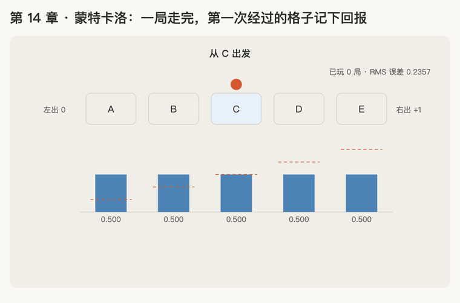
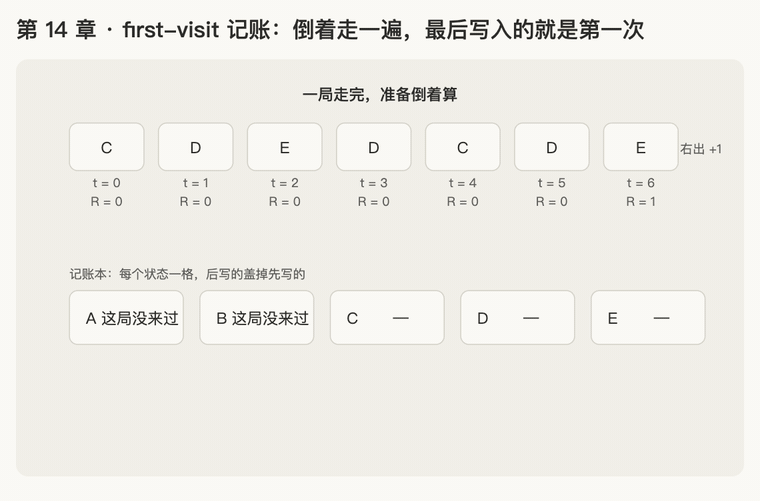

第 14 章 · 蒙特卡洛 MC：一局走完，用真实回报的平均估价值
本章回答：不知道环境的 p，还能估出 \(v_\pi\) 吗？"每个状态记一个平均回报"具体怎么做？MC 有什么缺点？
讲解日期：2026-11-13 · 上一章：第 13 章 探索与利用 · 下一章：第 15 章 时序差分 TD
对应原文：Sutton & Barto 第 5 章开头与 §5.1 Monte Carlo Prediction（L6600–L6867，first-visit 算法框 L6673）、§5.3–5.4 MC 控制（L6920–L7509）、§6.1 常数 α MC（式 6.1，L8628–L8649）；例 6.2 随机游走（L9046 起）
本章缩写：MC = Monte Carlo（蒙特卡洛：摩纳哥的赌城，借指"靠随机抽样"）；first-visit：第一次访问；every-visit：每次访问；RMS = Root Mean Square（均方根：平方 → 平均 → 开根号，Transformer 讲义第 19 章见过）。全部缩写见 附录 · 缩写与术语表
讲解
第一步：从老虎机到多步：每个状态都记一个"平均回报"（2026-11-13）
第 13 章只有一个状态，每次的奖励就是结果。现在回到有很多状态、一局走很多步的问题。
想法很直接（L6655–L6660）：状态的价值是"从这里出发的期望回报"（第 7 章），那就一局一局去玩，每次经过某个状态，记下从那里往后实际拿到的回报，最后把这些回报取平均。
和第 7 章第二步的区别：第 7 章是"从指定状态出发跑 2000 次"；这里是正常地一局局玩，路上经过哪些状态，就顺便给哪些状态记账。
和 DP 的区别（L6610）：MC 只需要经验：真实走过的状态、动作、奖励序列，不需要知道 p。
| DP（第 10–12 章） | MC（本章） | |
|---|---|---|
| 要知道 p 吗 | 要 | 不要 |
| 用什么算 | 方程右边按 p 加权 | 真实玩出来的回报 |
| 一次更新几个状态 | 所有状态（扫一遍） | 这一局经过的状态 |
一句话：MC 不需要 p：一局局玩，每经过一个状态就记下它之后的真实回报，取平均就是价值。
第二步：随机游走：A B C D E 五个格子（2026-11-13）
例 6.2 随机游走（L9046–L9080）。后面两章都用它：
[左终点 0] A B C D E [右终点 +1]
- 每局从中间 C 出发；
- 每一步等概率往左或往右走一格（这是策略，也是环境的随机性，合在一起叫 Markov reward process，L9072）；
- 走出左边：奖励 0，结束；走出右边：奖励 +1，结束；其余每步奖励 0；不打折（γ = 1）。
价值的意思：回报只可能是 0 或 1，所以 \(v(s)\) = "从 s 出发最终从右边走出去的概率"。书里给出真实值（L9080–L9085）：
| A | B | C | D | E | |
|---|---|---|---|---|---|
| 真实价值 | 1/6 ≈ 0.167 | 2/6 ≈ 0.333 | 3/6 = 0.5 | 4/6 ≈ 0.667 | 5/6 ≈ 0.833 |
越靠右，越容易从右边出去。
玩一局（代码里随机出来的一局）：
C → D → E → D → C → D → E → 走出右边，奖励 +1
这一局每一步奖励都是 0，只有最后一步 +1，所以从任何一步往后的回报都是 1。
一句话：随机游走从 C 出发左右乱走，右边出去 +1；价值 = 从右边出去的概率，A 到 E 是 1/6 到 5/6。
第三步：first-visit MC：每局每个状态只记第一次（2026-11-13）
问题：上面那一局，D 出现了 3 次、C 出现了 2 次。都记吗？
书里讲了两种（L6661–L6672）：
- first-visit MC：每局里，每个状态只用第一次出现之后的回报；
- every-visit MC：每次出现都记一笔。
两种都会收敛到真实价值（L6699–L6700）。本章用 first-visit（算法框 L6673）。
上面那一局的记账：
| 状态 | 第一次出现在第几步 | 之后的回报 | 记账 |
|---|---|---|---|
| C | 0 | 1 | C 记一笔 1 |
| D | 1 | 1 | D 记一笔 1 |
| E | 2 | 1 | E 记一笔 1 |
| A、B | 没出现 | — | 不记 |
一局只告诉你"C、D、E 这次都赢了"，A、B 这局没信息。
倒着算回报最方便（第 3 章第四步）：从最后一步往前，\(G \leftarrow R + \gamma G\)，每遇到一个状态就把当前的 G 记给它；倒着走到最后留下的，正好是"第一次出现"那时的回报。
更新平均：增量公式（第 13 章第四步）：每个状态记一个计数 \(N(s)\) 和当前平均 \(V(s)\)：
玩 1000 局以后（初值全设 0.5）：
| A | B | C | D | E | |
|---|---|---|---|---|---|
| MC 估计 | 0.153 | 0.325 | 0.495 | 0.673 | 0.829 |
| 真实价值 | 0.167 | 0.333 | 0.5 | 0.667 | 0.833 |
RMS 误差（五个误差平方 → 平均 → 开根号）只有 0.0084。不知道任何概率，只靠玩，就估得很准。
一句话：first-visit MC 每局每个状态只记第一次之后的回报，用增量公式更新平均；1000 局后误差不到 0.01。
第四步：常数步长 MC，以及 MC 的毛病：要等一局结束（2026-11-13）
常数步长版（式 6.1，L8634–L8649）：把 \(\frac{1}{N(s)}\) 换成固定的 α（第 13 章第四步）：
书里叫 constant-α MC。"目标"是这一局实际拿到的回报 \(G_t\)。下一章会拿它和 TD 比。
MC 的毛病：
- 要等一局结束（L8649–L8651）：\(G_t\) 要等到这局走完才知道，所以只能在一局结束后才更新。一局很长（或者永远不结束的持续任务）就很麻烦；
- 方差大：\(G_t\) 是一整局随机结果的总和，这一局运气好、下一局运气差，估计会抖得厉害，要很多局才能平均准；
- 没走到的状态学不到：这局没经过 A、B，就不更新它们。
MC 也能用来改进策略（§5.3–5.4，L6920–L7509）：把第 12 章的 GPI 搬过来：用 MC 估 \(q_\pi(s, a)\)（每个"状态 + 动作"记平均回报），再对 q 贪心改进；为了保证每个动作都被试到，选动作用第 13 章的 ε-greedy（书里叫 ε-soft 策略，L7326 起）。第 16 章的 SARSA 是同样的思路，只是把 MC 换成了 TD。
一句话：常数 α MC 用整局回报 \(G_t\) 当目标；毛病是要等一局结束、方差大；加上 ε-greedy 就能用来找最优策略。
动画演示：随机游走一局局玩，五个格子的估计慢慢贴到 1/6…5/6

可交互版：animations/l14-monte-carlo.html（要能点按钮、拖滑块，需要用本地服务打开，见 animations/README.md"跑起来看"）。
怎么看：
- 上面一行是 A–E 五个格子，小球按随机游走一步步走，走完一局才更新（第四步：要等一局结束）；
- 一局结束时，这局第一次经过的格子亮起，记下回报 0 或 1（第三步）；
- 下面柱状图是当前估计，虚线是真实值 1/6 … 5/6，局数越多越贴近；
- 滑块调要玩几局，右上角显示 RMS 误差。
动画演示 2：倒着走，最后写入的就是第一次（第三步）

可交互版：animations/l14b-first-visit.html（按钮切换 γ = 1 / 0.9）
怎么看：
- 用的是第二步那一局：C → D → E → D → C → D → E → 右出 +1。默认 γ = 0.9，只为看清每一步的 G 不一样；切到 γ = 1 就是书上的情况，G 全是 1。
- 从最后一步往前，每步 G ← R + γG（第 3 章第四步），并把当前 G 写进这个状态的格子；后写的盖掉先写的。
- 走到开头，格子里留下的正好是每个状态第一次出现时的回报：first-visit。灰色划掉的几笔，every-visit 会也记上。
练习与作答记录
题 1：一局随机游走是 C → B → A → 走出左边。按 first-visit MC，哪些状态记账、各记多少？
作答：（待作答）
题 2：\(V(C)\) 当前是 0.5、已经记了 4 笔（N = 4），这局 C 之后的回报是 1。用增量公式算新的 \(V(C)\)。
作答：（待作答）
题 3：为什么 MC 必须等一局结束才能更新？如果任务永远不结束会怎样？
作答：（待作答）
口诀
不要 p 只要经验，一局局玩、记回报、取平均；
first-visit 每局只记第一次，倒着算回报最方便；
常数 α：V 往 G 挪一步；
毛病：要等终局，抖得厉害，没走到的学不到。
本章复习卡片
- R24（MC 预测：用真实回报 \(G_t\) 的平均估 \(v_\pi\)；first-visit；常数 α 式 6.1；要等一局结束）
附录 · 延伸阅读
留给以后深入学习用，不影响本章主线。★ 是建议先读的。L 行号指
materials/text/books/sutton-barto-RLbook2020.txt。
推荐阅读
| 读什么 | 读哪里 | 读它为了什么 |
|---|---|---|
| ★ Sutton & Barto §5.1 | L6651–L6867（first-visit 算法框 L6673，例 5.1 21 点） | 本章原文；21 点例子是 MC 的经典应用 |
| Sutton & Barto 第 5 章开头 | L6600–L6650 | MC 和 DP 的区别：只需要经验 |
| Sutton & Barto §5.3–5.4 | L6920–L7509（exploring starts、ε-soft） | 用 MC 找最优策略（第四步末尾） |
| Sutton & Barto §5.5–5.7 | L7510 起 | off-policy MC 与重要性采样（第 23 章 PPO 会用到重要性采样） |
| ★ Sutton & Barto 例 6.2 | L9046–L9100（例中的学习曲线） | 随机游走：MC vs TD 的对比实验（下一章） |
| CS 285 第 5 讲 | lec-05.txt 开头 |
策略梯度也用"整局回报"当估计：同样有方差大的毛病（第 20–21 章） |
数学原理
- 无偏：\(G_t\) 是 \(v_\pi(S_t)\) 的无偏样本（\(\mathbb{E}[G_t \mid S_t = s] = v_\pi(s)\)），所以 MC 估计的平均会收敛到真值；误差约 \(\sigma/\sqrt{N}\)（第 4 章大数定律）。
- first-visit 与 every-visit：first-visit 每个样本独立同分布，是标准的样本平均；every-visit 的样本之间相关，但也收敛（L6699–L6710）。
- MC 不 bootstrap：MC 的目标 \(G_t\) 不用到任何别的状态的估计值（"they do not bootstrap"，L8529；bootstrapping 的定义在 L6531）；下一章的 TD 会用到，这就是两者的根本区别。
- 随机游走的真实值：从 s 出发右出的概率满足 \(v(s) = \frac12 v(s-1) + \frac12 v(s+1)\)，边界 0 和 1，解是一条直线：1/6 … 5/6。
公式清单
| 公式 | 意思 |
|---|---|
| \(V(s) \leftarrow V(s) + \frac{1}{N(s)}[G - V(s)]\) | first-visit MC（真平均） |
| \(V(S_t) \leftarrow V(S_t) + \alpha[G_t - V(S_t)]\) | 常数 α MC（式 6.1） |
| \(G \leftarrow R + \gamma G\)（倒着走） | 一局结束后算每一步的回报 |
| \(\text{RMS} = \sqrt{\frac15\sum_s (V(s) - v_\pi(s))^2}\) | 衡量估计准不准 |
代码对照：把本章的数字用代码算一遍
代码在
cs285-deep-rl/solutions/chapter-code/ch14_monte_carlo.py（随机游走在rl_envs.py的random_walk_episode），测试tests/test_ch10_16.py。
同一章的 Jupyter notebook：cs285-deep-rl/solutions/chapter-code/notebooks/ch14_monte_carlo.ipynb（讲解和代码放在一起，一格一格边读边跑；代码都写在格子里，Colab 也能直接打开）。
bash cd cs285-deep-rl/solutions/chapter-code uv run python ch14_monte_carlo.py
| 讲义 | 代码 | 跑出来 |
|---|---|---|
| 一局 | random_walk_episode(np.random.default_rng(3)) |
C → D → E → D → C → D → E，奖励 1 |
| 1000 局 first-visit | mc_prediction(1000) |
0.153、0.325、0.495、0.673、0.829 |
| 误差 | rms(V) |
0.0084 |
关键几行：
G, returns = 0.0, {}
for s, r, _ in reversed(episode): # 倒着走
G = r + gamma * G
returns[s] = G # 后写的覆盖先写的 → 留下的是第一次出现时的回报
代码里才看得到的：用字典 returns[s] = G 倒着覆盖，一行就实现了 first-visit：倒着走时最后一次写入 s 的，正是正着数第一次出现的那一步。改成"每次都更新"就是 every-visit。
自己改一改（不影响练习答案）：
rms(mc_prediction(n))，n = 10 / 100 / 1000 / 10000 → 0.178、0.088、0.0084、0.0031。局数越多越准。mc_prediction(1000, alpha=0.1)改成固定步长，看误差还会不会一直下降。